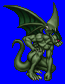
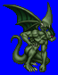
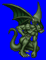
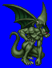

Height: 2.5 meters Weight: 1200 lbs.
Habitat: Cave Origin: Europe
Meaning: Old French "gargouille" , meaning throat
Gargoyles are often seen as icons with the purpose of driving away evil, such as on the roofs of old churches. It was often used as a stylish gutter, with the water flowing out of its mouth. It only assumed its role as a demon once Christianity had spread. As for its form, it is the synthesis of humanlike and birdlike features, some with large, curved talons. Because it is made of stone, attacks with swords tend to be ineffective.